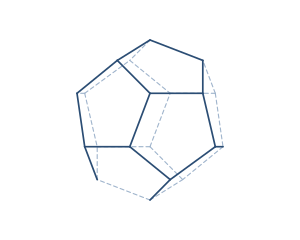

A regular dodecahedron is a solid made of twelve identical regular pentagons, with three meeting at every corner. It is one of the five Platonic solids and, with its many faces, rolls almost like a ball. All edges share the same length a.
You'll meet it as the d12 die in tabletop gaming, in some desk calendars (one month per face), and in the microscopic shells of certain viruses and radiolaria.
A regular dodecahedron is defined by a single edge length a.
| Faces | 12 (regular pentagons) |
|---|---|
| Edges | 30 |
| Vertices | 20 |
| Edge length | a |
As a Platonic solid it satisfies Euler's formula: V − E + F = 20 − 30 + 12 = 2.
Volume V = ((15 + 7√5) ⁄ 4)·a³
Surface area SA = 3·√(25 + 10√5)·a²
Take a regular dodecahedron with edge a = 2.
V = ((15 + 7√5) ⁄ 4)·a³ = ((15 + 7√5) ⁄ 4)(8) ≈ 61.30
SA = 3·√(25 + 10√5)·a² = 3·√(25 + 10√5)·(4) ≈ 82.58
Plato associated the dodecahedron with the cosmos itself — the shape "the god used for arranging the constellations on the whole heaven" — while the other four solids stood for the classical elements.